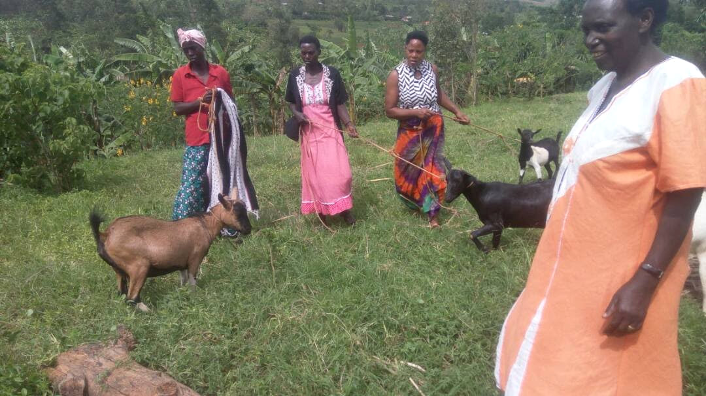
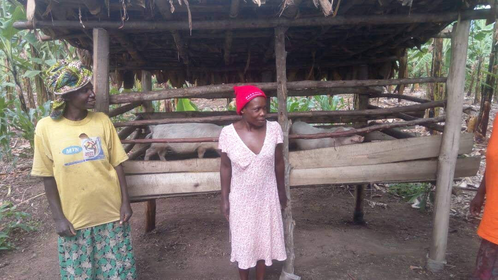
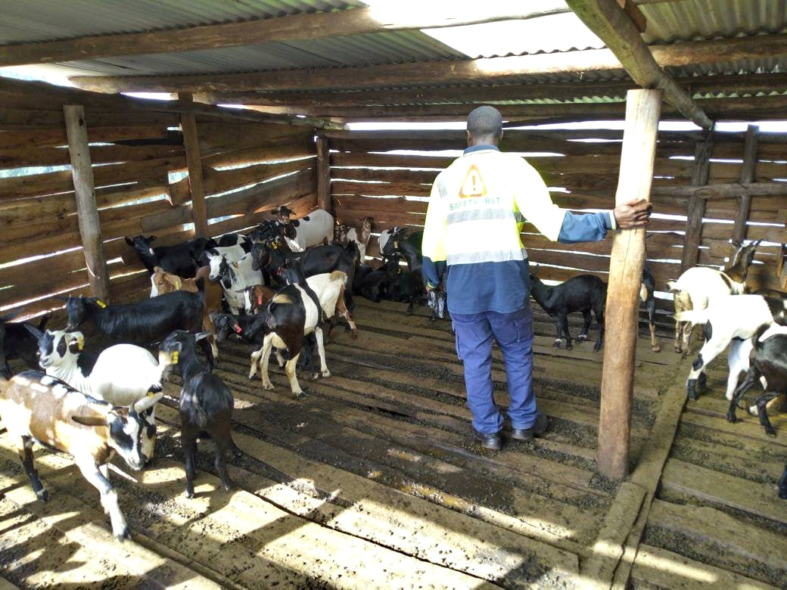
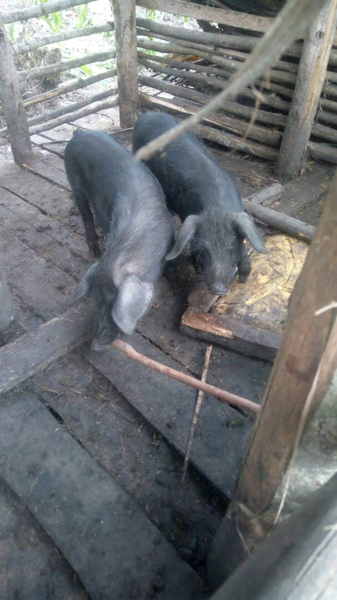
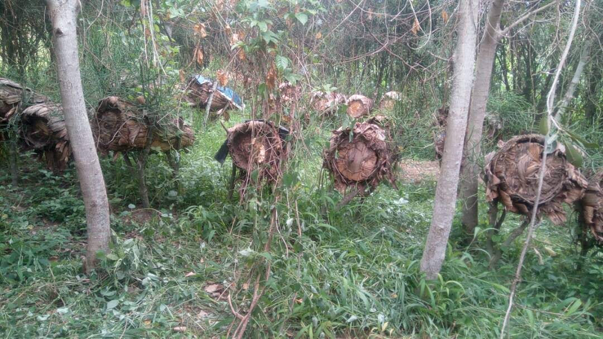
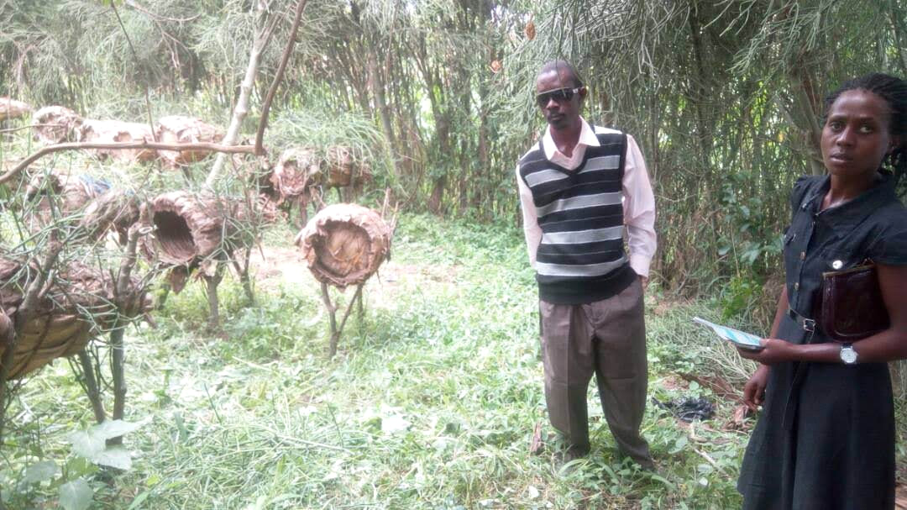

ABI Uganda partnership · Project archive
Goat rearing, pig rearing and beekeeping
Programme launched in 2017
The livelihoods programme worked through women’s groups to strengthen household income through goats, pigs and beekeeping. It directly supported 50 families. The project team reports that more than 26 of those families moved out of poverty. The work also aimed to ease financial pressures within households and contribute to the prevention of domestic violence.
Anchored Bridges Initiatives (ABI), formerly Ability Beyond the Iris, worked with supporters to provide livelihood opportunities that families could develop within their communities. Support focused on productive assets and small enterprises that could be managed locally.
Women’s groups received support for goat rearing, pig rearing and beekeeping. These activities were intended to help families generate income and improve their ability to meet everyday needs. The women’s role as producers and organisers was central to the programme.

The reported reach was 50 directly supported families, with more than 26 families reported to have moved out of poverty.
The photographic archive shows women with goats, livestock shelters and pig-rearing activities. Together, these images document the practical setting in which households cared for their animals and developed income-generating activities.
The programme’s livelihood objective was to help families build a more reliable economic base. Its wider social aim was to reduce financial strain and support safer family relationships, alongside efforts to prevent domestic violence.



Beekeeping complemented the livestock activities. The archive includes traditional hives among trees and a project visit to a beekeeping site. These photographs provide a record of the activity alongside the goats and pigs shown elsewhere in the report.
The reported progress of more than 26 families provides a reason to continue supporting women’s economic opportunities. Future support can build on the same focus on household livelihoods while following how income and family wellbeing develop over time.


We thank the women’s groups, participating families, ABI and the supporters who made these livelihood opportunities possible.
Download the project report as a PDF · Download the editable Word report
Programme figures and outcomes are reported by the project team.